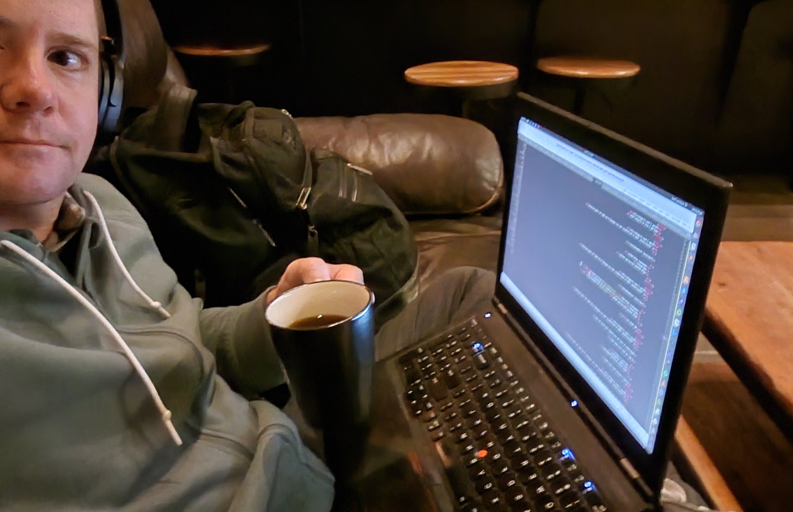
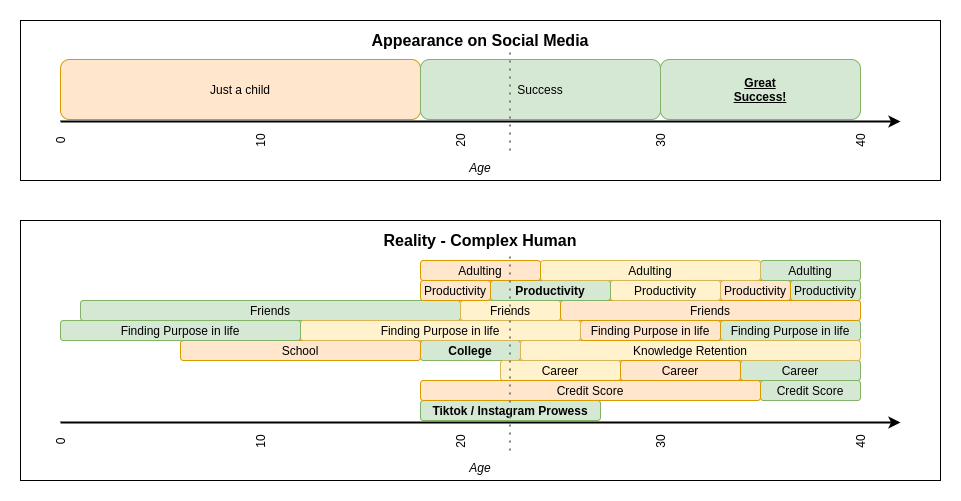

Marine Corps - all the structure a person could want
Yay! Success story! That concludes my talk! ⭐
My background
2017-2020
Major role change at work
Got married - whole new set of responsibilities
Pandemic
The previous structure in my life disappeared 😞
My background
2017-2020
Anxiety
Lack of direction
Could not focus
Felt like I was drowning in life
I needed help
My background
Getting help can seem Terrifying, but is Rewarding
Spent past 3 years introspecting, reading, learning about what works for me
These tips might work for you, or they might not
I am not a medical professional or expert on ADHD and other neurodiverse topics - I am sharing some things that work for me, but they may not work for you
Things I have struggled with
And how I work to mitigate them
Things I have struggled with
1. Concentration, even in an "ideal" environment
Traditional recommendations:
Somewhere comfortable
And quiet
With nothing distracting nearby
Things I have struggled with
1. Concentration, even in an "ideal" environment
Traditional recommendations:
Somewhere comfortable (I would be drowsy)
And quiet (silence can be deafening)
With nothing distracting nearby (boooooring)
No thank you.
Things I have struggled with
1. Concentration, even in an "ideal" environment
Experiment to find the environment that works for you
I get the best work done when:
Working in public
At a busy coffeeshop
With noise-canceling headphones
This was a revelation for me 🤯
Things I have struggled with
1. Concentration, even in an "ideal" environment

Things I have struggled with
1. Concentration, even in an "ideal" environment
It might be entirely different for you. Experiment.
Self-help & productivity bloggers do not have all the answers for what works for YOU
Things I have struggled with
2. I am not accomplishing enough - others are *ahead* of me in life
Society feeds us a lot of expectations about how our:
✅ Career path should look
✅ Family should look
✅ House or car should look
✅ Level of productivity should look
Things I have struggled with
2. I am not accomplishing enough - others are *ahead* of me in life
You are more than your level of productivity
Life is not a race with a specified timeline 🏁
Everyone is going at a different pace in different areas of their lives
Somebody probably feels the same way about an area of their life when they look at you
Things I have struggled with
2. I am not accomplishing enough - others are *ahead* of me in life

Things I have struggled with
3. Shame about half-finished or abandoned projects
There are so many things I want to do and create
I have dozens of hobbies & ideas & interests, but...
Most never reach completion,
stopping mid-project.
Progress, so near, but so far.
- Haiku by Jack (2023 [last night])
Things I have struggled with
3. Shame about half-finished or abandoned projects
Forgive yourself
Life isn't about the # of things you can accomplish
Not every project needs to be finished
The journey and experience are valuable
And, you can almost always go back to that idea or project in the future...
Things I have struggled with
3. Shame about half-finished or abandoned projects
Take notes - be religious about this
If I don't write it down, it is not real
Have *some way* to write notes wherever you are - bed, work, bathroom, etc
Paper Notebooks
Mobile apps
Waterproof writing tablets
Things I have struggled with
3. Shame about half-finished or abandoned projects
Set future-you up for success. Write down:
Every random thought on the project
Research you've done
Work you've completed
Where you stopped
Where documents/code/media are located
How to get the working environment reestablished
Any context that will help get you restarted quickly
Things I have struggled with
3. Shame about half-finished or abandoned projects
Keep your list of projects and associated notes where you can easily find it
If you one day have energy and interest again, this list can help you be productive on *something* cool, even if its not the thing you should be working on 😅
Things I have struggled with
3. Shame about half-finished or abandoned projects
Look back occasionally - you are doing more than it might feel like in the moment
In the past 5 years I *have* failed to achieve many things I set out to do, but I've:
Built a business & developed a powerful data system with Django
Gave speeches about django & other topics
Created many tools for work
Contributed to OSS projects, including Django
Things I have struggled with
3. Shame about half-finished or abandoned projects
But more importantly:
Provided for my family
Mentored young women and men in the military
Kept our husky alive and thriving (and spoiled)
Made wonderful friends in the django community
You are more than your level of productivity
Things I have struggled with
4. Getting help
Needing help is normal & human, and seeking help is healthy.